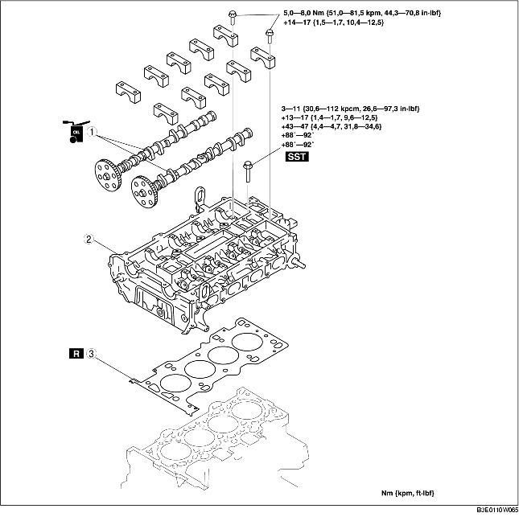

BYTE AV TOPPLOCKSPACKNING [LF]
B3E011010271W02
-
Varni ng
-
• Bränsleånga är mycket farligt. Den är mycket lättantändlig och kan orsaka svåra skador och olyckor. Håll alltid gnistor och öppna lågor borta från bränslet.
-
• Bränsleläckage och bränslespill är mycket farligt. Bränslet kan antändas och orsaka svåra skador och olyckor eller till och med dödsfall. Bränsle kan dessutom irritera hud och ögon. För att förhindra detta, följ alltid anvisningarna under 'Säkerhetsföreskrifter för bränslesystemet'. (Se Säkerhetsföreskrifter för bränslesystemet.)
1. Ta av kamkedjan. (Se DEMONTERING/MONTERING AV KAMKEDJA [LF].)
2. Demontera tändspolarna. (Se DEMONTERING/MONTERING AV TÄNDSPOLE [LF].)
3. Demontera insugningsröret. (Se DEMONTERING/INSTALLATION AV INSUGSLUFTSYSTEM [LF].)
4. Koppla ur följande delar.
-
(1) WU-TWC (Se DEMONTERING/MONTERING AV AVGASSYSTEMET [LF].)
-
(2) Övre kylarslang
-
(3) Vattenslang
-
(4) Värmarslang
-
(5) kablage
5. Stötta upp motorn ordentligt genom att först sätta motordomkraft och fäste vid oljetråget.
6. Demontera i den ordning som anges i tabellen.
7. Montera i omvänd ordning mot demonteringen.
8. Gör ett kompressionsprov. (Se KONTROLL AV KOMPRESSION [LF].)

.
|
1
|
Kamaxel
|
|
2
|
Topplock
|
|
3
|
Topplockspackning
|
Observera vid demontering av kamaxeln
-
Observera
-
• Topplocket och kamaxelöverfallen är numrerade så att de kan återmonteras korrekt på originalplatsen. Förvara kamaxelöverfallen tillsammans med det topplock de hör till medan de är demonterade. Blanda inte överfallen.
1. Lossa kamaxelns lageröverfallsbultar i 2-3 steg, i den ordning som visas.
Observera vid demontering av topplocket
1. Lossa topplocksbultarna i 2-3 steg, i den ordning som visas.
Observera vid montering av topplocket
1. Mät längden på alla topplocksskruvar.
-
• Byt ut alla som överskrider maxlängden.
-
Längd L
-
145,2-145,8 mm {5,72-5,74 tum}
-
Maximum
-
146,5 mm {5,77 in}
2. Dra åt topplocksskruvarna i den ordning som visas, med följande 5 steg och med hjälp av specialverktyget SST (49 D032 316).
-
Åtdragningsmoment
-
(1) 3-11 Nm
-
{0,4-1,1 kpm, 27,6-97,3 in·lbf}
-
(2) 13-17 Nm
-
{1,4-1,7 kpm, 9,59-12,5 ft·lbf}
-
(3) 43-47 N·m
-
{4,4-4,7 kpm, 31,8-34,6 ft·lbf}
-
(4) 88°-92°
-
(5) 88°-92°
Observera vid montering av kamaxeln
1. Ställ in kamläget för cylinder 1 i övre dödläge (Top Dead Centre) och montera kamaxeln.
2. Dra åt kamaxelöverfallen tillfälligt och jämnt i 2-3 steg.
3. Dra åt kamaxelns lageröverfallsskruvar i angiven ordning, i följande två steg.
-
Åtdragningsmoment
-
(1) 5,0-8,0 Nm
-
{51,0-81,5 kp·cm, 44,3-70,8 in·lbf}
-
(2) 14,0-17,0 Nm
-
{1,5-1,7 kpm, 10,4-12,5 ft·lbf}